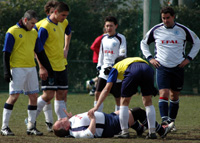
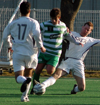
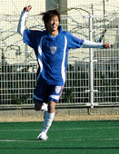

OLD STORIES - Feb 2007
Depleted Hibs Ravaged by YC&AC
 |
|
YCAC mount their offensive - (well actually Damo's not that awful!!) |
YC&AC, Sun 25th Feb. Title aspirants YCAC duly rolled over mid table Hibs Sunday lunchtime at YCAC. 3-0 it ended but it could have been worse if not for the woodwork, some familiar heroics from Hitoshi and a stoic performance from Jay in the heart of the Hibs defence. Those 2, Tomo, if he could concentrate on the game instead of Joe Takeda and Rob Scott, if he could get the hang of the offside rule, must all be targets for the bigger clubs in the next transfer window. more ...
ST.
The Magic of the Cup.
Misato, Sun 25th Feb. For the first time in 2007 the Geckoes were able to have a mostly full strength squad for the Footy Japan Cup game v the Kanto Celts.
In what was expected to be a close game, the Geckoes were after revenge for their 2-1 reversal a few weeks ago and were somewhat pleased to see that a few of the Celts had been out to watch the rugby the previous night. more ...
RK.
Maritizio Held by Rejuvenated YCAC 2nds
|  |
|
'Did the earth move?' Per R. takes a tumble! |
YC&AC, Sun 25th Feb. One of the coldest mornings I can remember this season as YCAC 2nds lined up against Maritzio, with the usual powerful wind blasting down the length of the pitch and the pitch looking increasingly like Oi-Futo Dai Ichi with a bad case of shingles. Maritizio are well known to be a handy team, having only been relegated from TML Division 1 in 2004/5 (along with perennial whingers BEFC). This season they are looking an outside bet for promotion and have had some notable results, not least a 3-1 whupping of 2nd place Vagabonds. And in Henry M. they have one of the Divisions top scorers (oh yes, we do our homework at the YCAC you know). They came into the game looking for 3 points to continue their promotion challenge. more ...
SM.
Barbarians Repelled by Red Army
Misato, Sun 25th Feb. Promotion beckons for the British Embassy. A passing master class down by the Misato riverbank saw off the Barbarians, with Division 1 next season now all but a certainty for BEFC. And if the Embassy play this way next year they might even remove the "yo-yo" tag that currently hangs round the club's neck. more ...
SC.
JETs Fall Under BFC Pressure!
Hachioji Park, Sat 17th Feb. BFC overcame Saitama Jets 2-1 on a rain-swept evening at Hachioji Koen with a late goal in a competitive and entertaining encounter. BFC took the lead early in the second half with a low 25 yard shot that appeared to wrong-foot the Jets’ goalkeeper, man-of-the-match Kousuke Harada. The Jets then equalized direct from a corner courtesy of set piece specialist Tomo Kobayashi, but were left empty handed by a late BFC winner, scored via a piece of quick thinking from a free kick on the edge of the area. more ...
RK.
Groundhog Day as Evans shoots down JETs.
Hachioji Park, Sat 17th Feb. The JETs must be sick of the sight of Evans, who did 'em with a late-ish goal for the second time this season to give table-topping BFC a 2-1 win. Spare a thought for the JETs, though. They were terrific. How on earth they have only taken six points from 10 games is a mystery. more ...
JR.
BEFC Lions Roar Back To Top Of The League.
YC&AC, Sat 10th Feb. With the post Christmas mini-slump well and truly a thing of the past after last week's comprehensive away win against YCAC 2nds - I mean 1sts, The British Embassy FC were well aware of the importance of victory over Kwangsei GFC, potentially their most serious challengers for the TML Division 2 title. KGFC were sitting 5 points behind with two games in hand before the match, with the highest goal difference tally in the league. Not only that; these young, healthy, sports-orientated, technically adept, non-smoking, non-shaving, boyish tricksters had whopped YCAC 2nds 4-0 the week before. more ...
SL.
Hibs & Sala go through to FJ Cup Semis.
OiFuto, Sun 11th Feb. The first teams to get through to the Cup semi finals are Hibs and Sala FC at the expense of Swiss Kickers & Maritizio respectively. This is the first time in the 4 seasons of the Cupo that Swiss have been knocked out, having been champions in the previous 3 seasons. more ...
FJ.
|  |
|
Ian Jelley tackles Celt's Ed Romaneiro to deny the striker any sight of goal. |
Beding Lethalfield.
Hachioji Park, Sat 3rd Feb. Not too tricky a task one might imagine, unlike beating the Kanto Celts who once again took Sala right to the wire.
The Celts who have-along with BFC-been the toughest opposition faced by Sala this season, were once more smited by a last minute backhand down the line from the big man himself. Yes it seems lady luck can barely even muster a grimace for the boys in hoops, but you can talk about luck all season long (Some do…) and the fact is that it tends to even out eventually. more ...
RC.
YC&AC Keep Jetro Pinned at Bottom.
YC&AC, Sun 4th Feb. YCAC went nap against bottom of the table Jetro to edge back alongside BFC at the top of Division 1 on sunday
All credit to Jetro who, despite their desperate situation, had a full squad out and fought keenly for the whole 80 minutes in the warm sunday afternoon sunshine. more ...
ST.
|  |
|
Sho celebrates his 2nd goal! |
'Sho Time' as BFC Smash Swiss
Hachioji Park, Sat 3rd Feb. Shosuke scored two superb goals and won a crucial penalty to propel BFC to a 4-1 win over old rivals the Swiss on Saturday. Pink Neil tucked away the spot kick that restored BFC's lead and Morson was also on target for the TML leaders.
After last week's frustrating draw against the French, BFC needed a big performance against their old rivals to preserve their slender lead at the top of the TML standings. They got one, with Terry, Taka and Brian Doyle gargantuan. more ...
KC.
Silky Vags Slide Past Shane.
Hachioji Park, Sun 4th Feb. A game which on paper should have been relatively easy. A game that wasn’t and yet a game that saw the Vags play some of the silkiest fluid football that has probably ever been seen in Vagland. Very strange. more ...
VB.